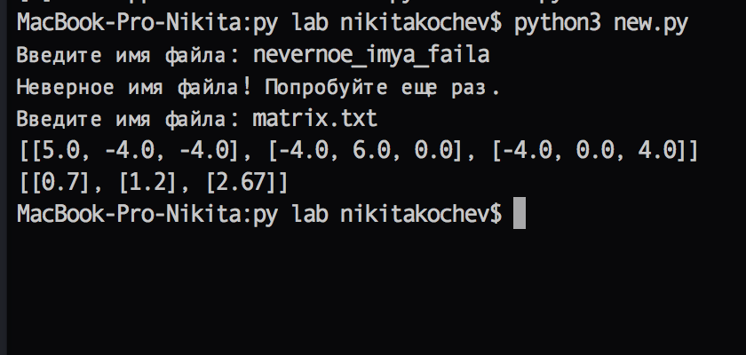
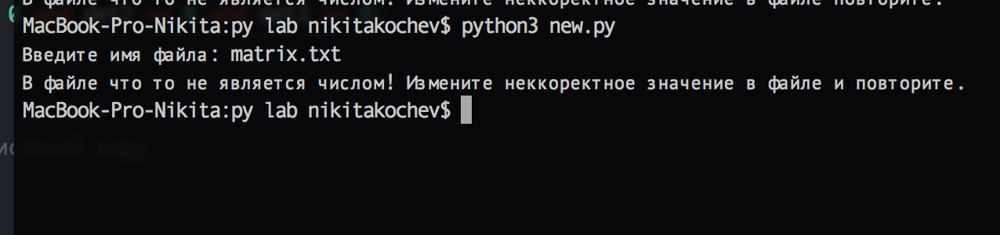
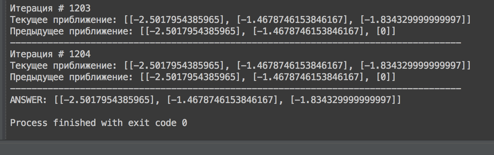

5, -4, -4, 0.7
-4, 6, 0, 1.2
-4, 0, 4, 2.67
Работа реализована на языке программирования Python 3.4, но, думаю, что для работы подойдет интепритатор любой версии (3+)
Для работы с матрицами разработан класс Matrix
Чтобы работать с классом необходимо подключить соответствующий модуль
from relax import *
В конструктор матрицы нужно передать лишь количество строк и количество столбцов. Код конструктора
def __init__(self, i_count, j_count):
self.i = i_count
self.j = j_count
self.matrix = list()
Далее следует выбрать способ создания матрицы, путем вызова метода для созданного экземляра класса
Ввод с клавиатуры
b = Matrix(3, 2)
a.create()
Код метода:
def create(self):
print('Создаем новую матрицу {i_count}x{j_count} ...'.format(i_count=self.i, j_count=self.j))
for a in range(0, self.i):
row = []
el = input('Введите через запятую элементы {row} строки: '.format(row=a+1)).split(',')
if len(el) != self.j:
print('Неверное количество элементов. Вы создавали матрицу с {j} столбацами'.format(j = self.j))
break
else:
for it in el:
row.append(float(it))
self.matrix.append(row)
Ввод из файла.
Ниже - код для ввода матрицы из файла, а также результат выполнения данного кода и реализация метода.
from relax import *
a = Matrix(3, 1)
a.import_matrix_from_file()
c = a.split_matrix('matrix')
d = a.split_matrix('answers')
print(c.matrix)
print(d.matrix)

Изменим немного содержимое файла matrix.txt ...

Код метода для создания матрицы из файла:
def import_matrix_from_file(self):
filename = input('Введите имя файла: ')
try:
f = open(filename)
for line in f:
row = []
str_row = line.split(',')
for el in str_row:
row.append(float(el))
self.matrix.append(row)
except FileNotFoundError:
print('Неверное имя файла! Попробуйте еще раз.')
self.import_matrix_from_file()
except ValueError:
print('В файле что то не является числом! Измените неккоректное значение в файле повторите.')
sys.exit()
Как видно, в обоих случаях присутствует защита от неверно введенных данных. В случае ввода с клавиатуры, нельзя ввести в строку больше или меньше элементов, чем, заданное при создании экземпляра класса, кол-во столбцов. Ввести неверное кол-во строк просто не получится, т.к. цикл для создания строки проходит в данном случае то количество итераций, кторое указал пользователь. Во втором случае присутствует защита от неправильного ввода имени файла путем отлова эксепшена, который бросает интепритатор Питона, если нет файла с заданным именем. Предлагается заново ввести имя файла.
Созданная матрица в коннечном итоге представляет собой массив, в котором содержатся еще массивы. Каждый внутренний массив - строка с элементами этой строки.
Ниже приведен код метода, приводящий матрицу в удобный для вычислений вид, как сказано в алгоритме метода релаксации
def comfortable_view(self):
new_matrix = []
current_main_elem = 0
for row in self.matrix:
new_row = []
row[len(row)-1] = row[len(row)-1] * -1
for el in row:
new_row.append(el/row[current_main_elem]*-1)
new_matrix.append(new_row)
current_main_elem += 1
for r in new_matrix:
for el in r:
el *= -1
self.matrix = new_matrix
Для реализации алгоритма потребуется перемножать матрицы, складывать векторы (вертикальные матрицы), искать индекс максимального элемента в векторе
Ниже - реализация соответствующих методов. Стоит отметить, что в метод, который складывет векторы, а также в метод, который ищет индекс строки максимального элемента, не стоит передавать что-то непохожее на векторы.
#Перемножение матриц
@staticmethod
def mult(m1, m2):
global m3
row_sum = 0
row = []
if len(m2.matrix) != len(m1.matrix[0]):
print("Матрицы не могут быть перемножены")
else:
r1 = len(m1.matrix)
c1 = len(m1.matrix[0])
r2 = c1
c2 = len(m2.matrix[0])
m3 = Matrix(c1, r2)
for z in range(0, r1):
for j in range(0, c2):
for i in range(0, c1):
row_sum = row_sum+m1.matrix[z][i] * m2.matrix[i][j]
row.append(row_sum)
row_sum = 0
m3.matrix.append(row)
row = []
return m3
### индекс максимального элемента в векторе
@staticmethod
def max_index(matrix):
index = 0
array = list()
for row in matrix:
for el in row:
array.append(el)
while array[index] != max(array):
index += 1
return index
#сумма векторов
@staticmethod
def vector_sum(matrix1, matrix2):
vector1 = []
vector2 = []
result = Matrix(3, 1)
for row in matrix1.matrix:
for element in row:
vector1.append(element)
for row in matrix2.matrix:
for element in row:
vector2.append(element)
i = 0
for el in vector1:
new_row = list()
new_row.append(el + vector2[i])
result.matrix.append(new_row)
i += 1
return result
Также потребуется отделить матрицу с переменными и ответами от исходной, проверить матрицу на симметричность и критерий Сильвестра. Код для этих задач находится в модуле relax.py
Условие выхода из цикла метода релаксации реализованно булевым статическим методом:
@staticmethod
def stop_condition(cur_residual, prev_residual):
if (cur_residual.matrix[Matrix.max_index(cur_residual)][0] - prev_rsidual.matrix[Matrix.max_index(prev_residual)][0])
/ cur_residual.matrix[Matrix.max_index(prev_residual)][0] < 0.00001:
return True
else:
return False
Тут мы проверяем условие векторной нормы, как сказано в книге
Затем ищем вектор R(k) по формуле -X(k) + DX + B до тех пор пока не будет выполнено условие остановки цикла
Благодаря разработанному функционалу для работы с матрицами и векторами (матрица с 1 столбцом), программа получилась довольно короткой:
from relax import *
a = Matrix(3, 1)
a.import_matrix_from_file()
if a.split_matrix('matrix').is_symmetric():
print('Входная матрица симметрична. Можем продолжать.')
else:
print('Матрица не симметрична. Выход из программы')
sys.exit()
matrix = a.split_matrix('matrix')
answers = a.split_matrix('answers')
if not matrix.sylvesters_criterion():
print('Матрица не удовлетворяет критерию Сильвестра')
new_matrix = Matrix.mult(matrix, matrix.transpose())
new_answers = Matrix.mult(matrix.transpose(), answers)
else:
sys.exit()
print('Приводим матрицу к удобному виду...')
Matrix.comfortable_view(new_matrix, new_answers)
for i in range(0, len(new_matrix.matrix)):
new_matrix.matrix[i][i] = 0
print(new_matrix.matrix)
print(new_answers.matrix)
numb_of_iter = 0
cur_aprox = Matrix(3,1)
for a in new_answers.matrix:
row = list()
row.append(a[0])
cur_aprox.matrix.append(row)
prev_aprox = Matrix(3, 1)
prev_aprox.matrix = [[0], [0], [0]]
while Matrix.stop_condition(cur_aprox, prev_aprox, numb_of_iter):
tmp = Matrix.vector_sum(cur_aprox.negative(), Matrix.mult(new_matrix, cur_aprox))
rk = Matrix.vector_sum(tmp, new_answers)
for i in range(0, len(cur_aprox.matrix) - 1):
prev_aprox.matrix[i][0] = cur_aprox.matrix[i][0]
cur_aprox.matrix[rk.max_index_abs()][0] = cur_aprox.matrix[rk.max_index_abs()][0] + rk.matrix[rk.max_index_abs()][0]
numb_of_iter += 1
print('Итерация # {numb}'.format(numb = numb_of_iter))
print('Текущая невязка: ' + str(cur_aprox.matrix))
print('Предыдущая невязка: ' + str(prev_aprox.matrix))
print('----------------------------' * 3)
Ответ:
